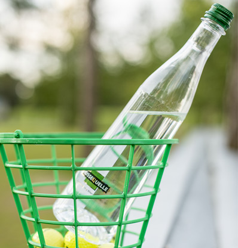
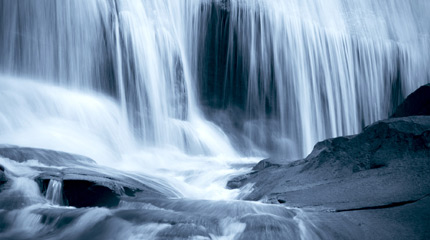

Движение воды RusseQuelle происходит через пласты пород толщиной в несколько сотен метров.
В основу концепции RusseQuelle заложен принцип абсолютной чистоты. Источник имеет историю более 500 лет и находится в уникальном месте России, городе Гороховец, входящем в Золотое Кольцо страны.

RusseQuelle - лучшая минеральная вода 2015 года

В наши дни технология производства заключается лишь в угольной фильтрации воды и абсолютной чистоте на линии розлива. Для обеспечения высокого качества продукции мы используем только экологически чистое сырье немецкого и российского производства.
Каталог продукции
В основу лаконичного дизайна бутылки RusseQuelle заложен высокий конус с заметным сужением у горлышка. Форма бутылочки чрезвычайно удобна – она легко держится в руке, устойчива на поверхности.
Движение – это способ познавать мир вокруг, соединять одни явления с другими и открывать что-то новое. Почему нам так свойственна тяга к движению, какова природа этой страсти? Возможно, этот секрет ещё не раскрыт, как и загадка возникновения нашей Вселенной. Но, с другой стороны, стоит лишь взглянуть на бурный ручей или пробивающийся сквозь землю родник, как становится ясно, что ответ на вопрос «Почему мы так любим движение?» — всегда был у нас перед глазами.